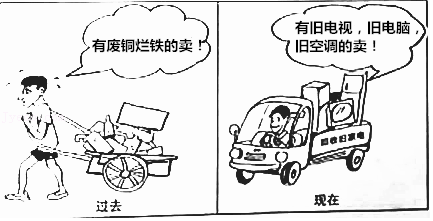
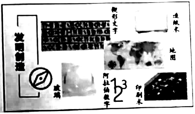

2019年北京市中考政治试题 · 选择题 第16、17、18、19、20题
16．（2分）第三届全国“书香之家”的入选家庭，有的爱书惜书，藏书万卷；有的经济不宽裕，但是醋爱读书，努力改变人生；有的几代同堂共同读书，美名远扬；有的热心阅读推广，举办阅读活动，传播阅读理念。可见，“书香之家”评选活动的目的是（ ）
A．推广精品阅读，实现全民参与
B．重视他人评价，不断完善自我
C．鼓励在家阅读，减少外出学习
D．展示书香魅力，传承读书家风
17．（2分）如图废品回收的变化从一个侧面表明（ ）

A．勤俭节约精神已过时
B．人民生活水平提高了
C．我国已建成资源节约型社会
D．人们的生活变得更加简单
18．（2分）垃圾虽小，却牵着民生。目前我国城市生活垃圾收集、运输和处理模式粗放，推进垃圾分类迟缓，增加了处理量和难度，造成每年数百亿元的损失。垃圾分类推进迟缓，缘于“有倡议缺标准、有试点少管理，靠自发无惩戒”。针对“靠自发无惩戒”，应当（ ）
A．加强科学管理，推动习惯养成
B．继续扩大垃圾分类试点的范围
C．以道德来引领，用法治来约束
D．提高公众对垃圾分类的认识度
19．（2分）在《长征》主题汇演中，来自国家大剧院“歌剧兴趣培养基地”的300余名学生，重温红色经典，用自己的方式向先辈致敬。不少学生看完汇演后表示，通过这次观演感受到歌剧的魅力，接受了思想的洗礼。如果给这段材料拟一个标题，最恰当的是（ ）
A．兴趣培养很重要，舞台表演要多样
B．人人学会把歌唱，你方唱罢我登场
C．以美育人结硕果，红色基因植后代
D．群众表演要专业，歌剧舞台展魅力
20．（2分）亚洲是人类文明的重要发祥地。如图中的“发明创造”表明（ ）

①亚洲人民创造了辉煌的文明成果
②亚洲各国相互依存程度空前加深
③人类文明因亚洲而更加绚丽多彩
④文化的交流不利于产生特色文化
A．①②B．①③C．②④D．③④